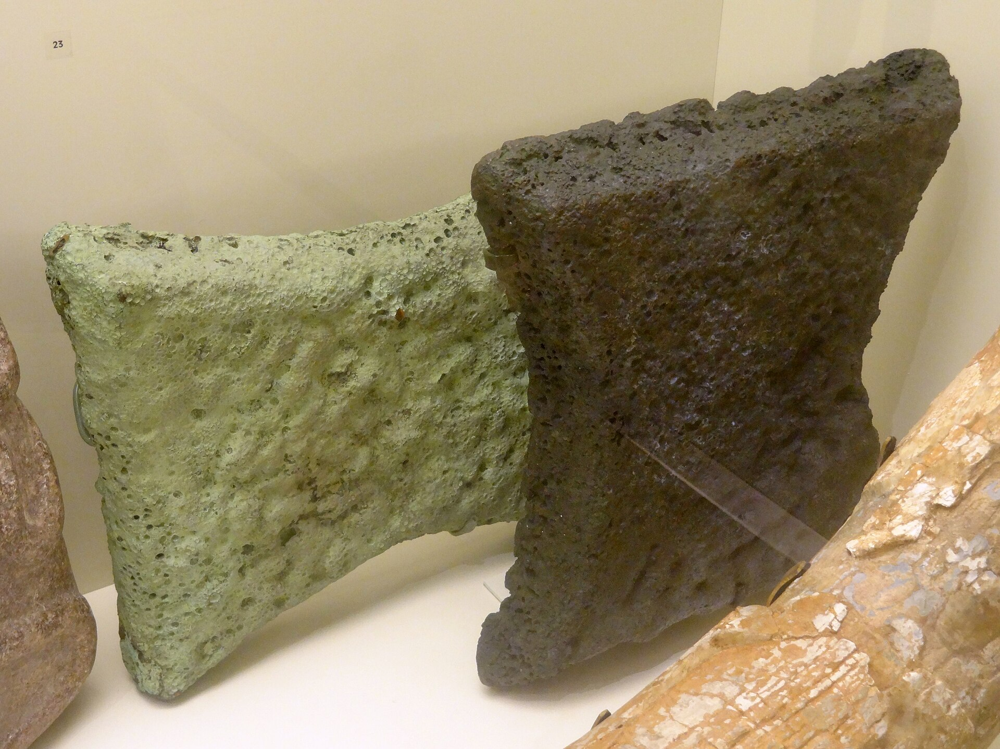
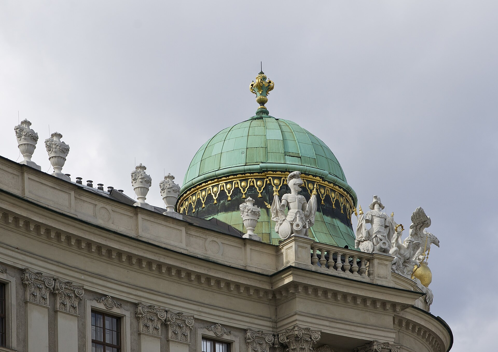
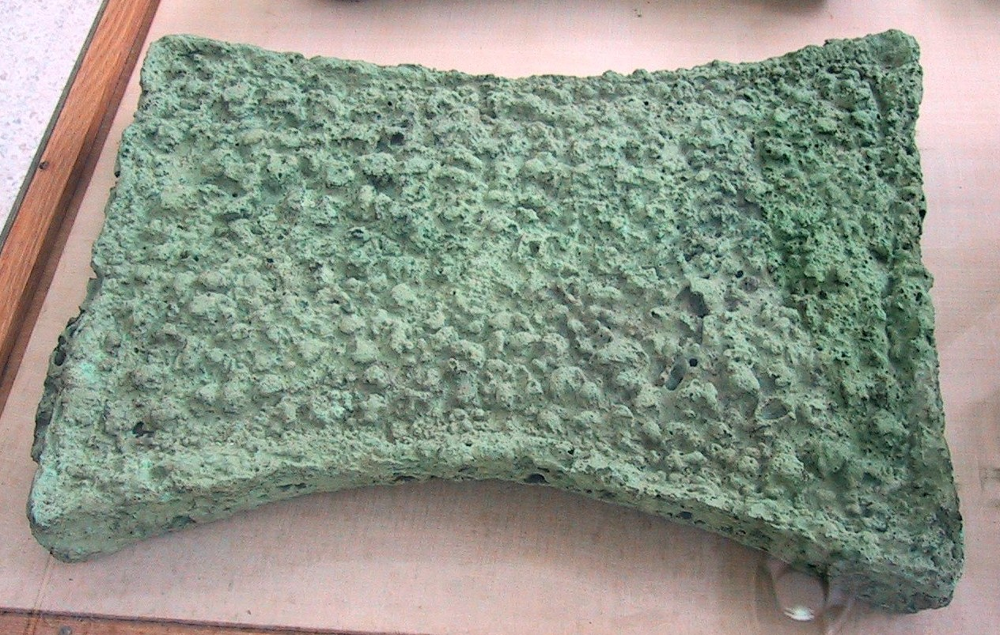
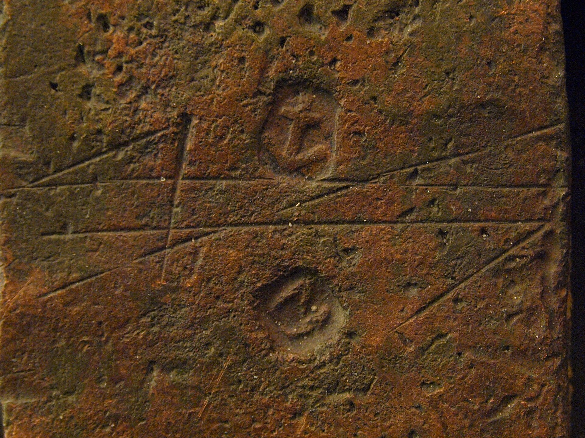
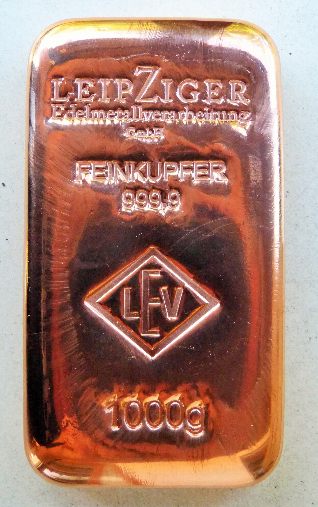
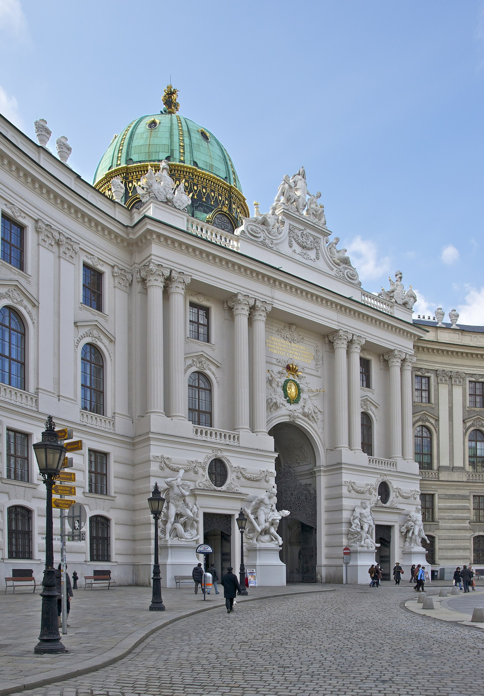
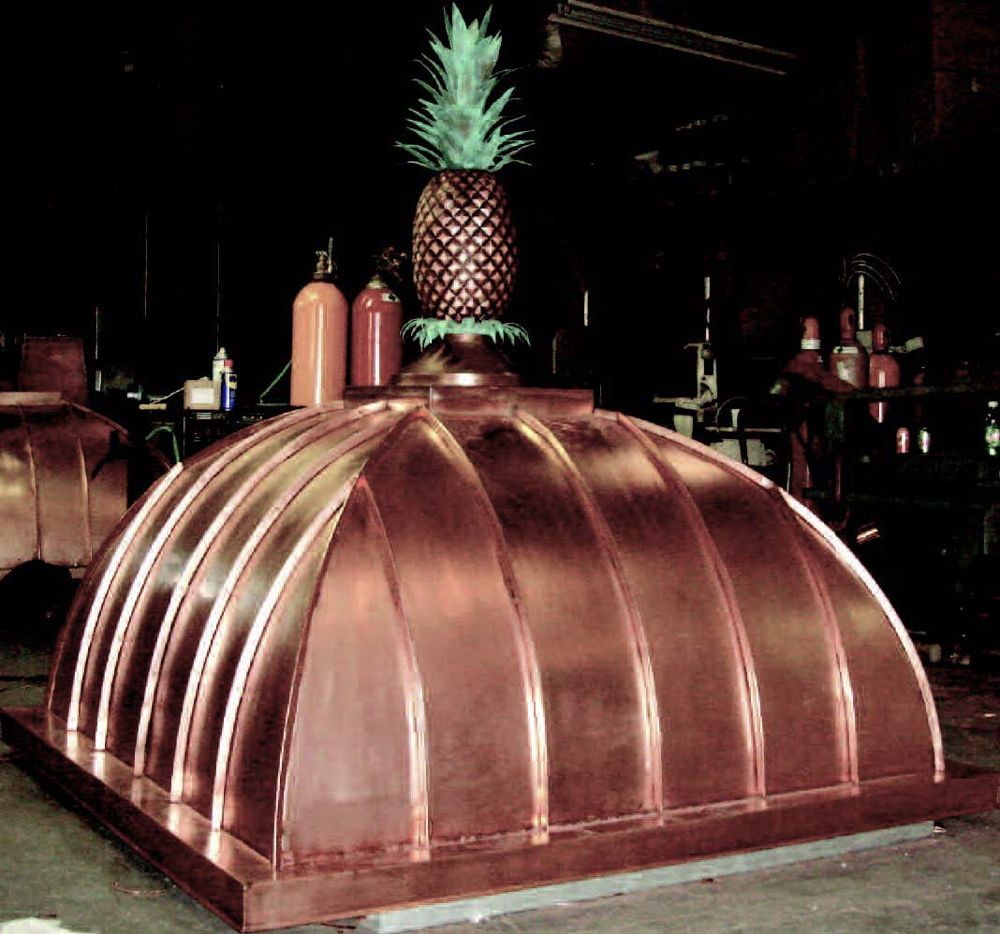
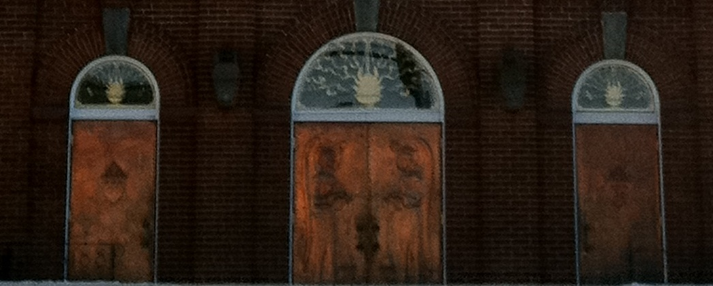
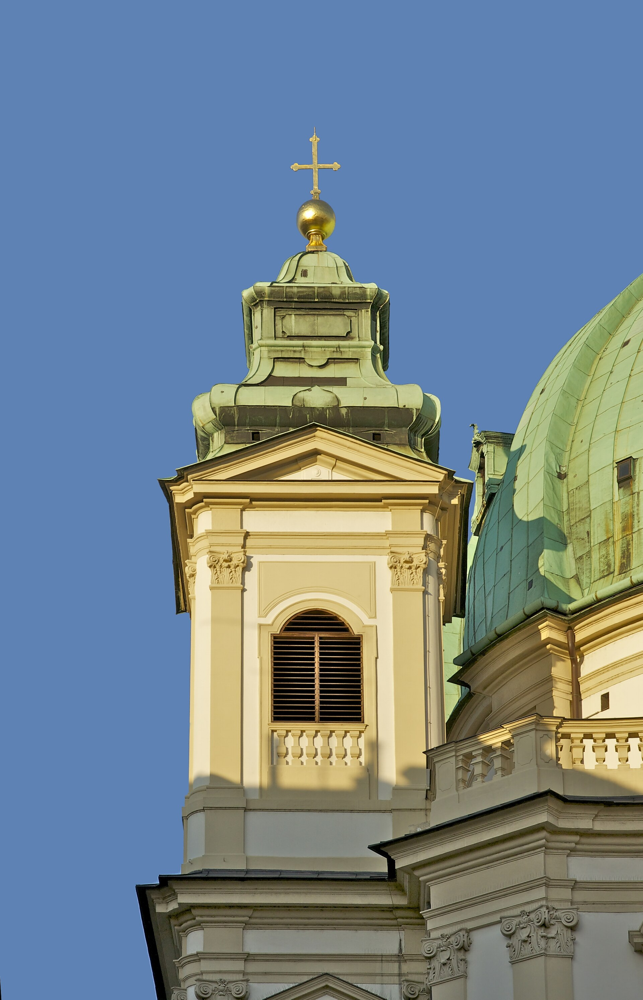

Der Hort
Barren aus Agia Triada, Kreta — Lagerhausrüstung der Minoischen Schatzkammer.

Über den Dächern der Kaiserpaläste liegt es grün und unvergänglich: Kupfer — das Metall der Kuppeln, Türme und Portale. MAJESTIC ASSETS widmet diesem edlen Erbe eine eigene Kathedrale: Reinkupfer 99,9 %, gegossen, gestempelt und als physisches Vermögen verwahrt.
Vier Messungen regieren das Haus. Wer Kupfer verwahrt, kennt seine Zahlen — wie ein Dom sein Gewölbe kennt.
Von der antiken Platte bis zum modernen Guss — jede Nische erzählt ein Kapitel der Kupfergeschichte. Fahren Sie mit dem Zeiger darüber.

Barren aus Agia Triada, Kreta — Lagerhausrüstung der Minoischen Schatzkammer.

Oxhide-Barren aus Zakros — Währungsform des Mittelmeerraums, nach Tierfell benannt.

Hüttenzeichen & Handelsmarken — jedes Siegel ein Versprechen über Feingehalt.

Rechteckiger Guss — das moderne Vermögensformat. Gewogen, gestempelt, nummeriert.
An Cathedrals im Abendlicht wird Kupfer zur Membran: tagsüber glüht es rot, nach Jahrhunderten erscheint es grünlich. Genau diese Verwandlung macht das Metall zum Symbol dauerhaften Vermögens — es altert, aber es verliert sich nicht.
MAJESTIC ASSETS wählt Barren mit gleichmäßiger Oberfläche und klarer Prägung. Was die Kathedrale über Jahrhunderte beweist, gilt hier im Kleinen: Substanz überdauert Stil.

Vier Bauten, in denen Kupfer zur Architektur wurde — und zum Beweis, dass Substanz trägt.
Wien — grün patinierte Kaiserkrone über dem Michaelertrakt.
Barockes Kupferportal — Eingang als Verheißung von Wert.
Wien — Kupferspitze über der Wiener Innenstadt.
Massive Kupferflügel — der Schlag des Metalls im Alltag.
Vier Stationen — jede unter Aufsicht, jede dokumentiert.
Kupferkonzentrat aus geprüften Hüttenkreisläufen — Herkunft dokumentiert.
Elektrolytisch auf 99,9 % — Reinheit ist die erste Tugend des Hauses.
In offenen Formen gegossen, langsam abgekühlt — gleichmäßige Struktur.
Stempel, Serie und Prüfprotokoll — der Barren verlässt das Haus als Zeuge.
Jedes Format mit Stempel, Serie und Protokoll. Erhältlich über eBay — mit Käuferschutz.

Was Käufer vor dem Erwerb wissen sollten — knapp und ohne Kleingedrucktes.

Jeder Barren wird aus elektrolytisch raffiniertem Cu-ETP gegossen und trägt Stempel und Seriennummer. Das Prüfprotokoll zum jeweiligen Guss liegt dem Versand bei.
Die Reserve liegt physisch in versiegelten Behältnissen. Der Versand erfolgt verpackt und versichert; der Verkauf läuft vollständig über eBay mit Käuferschutz.
Ja — und das ist gewollt. Wie bei Kathedrale und Kuppel entwickelt die Oberfläche eine dunkle bis grünliche Patina. Der Wert liegt im Gewicht, nicht im Glanz.
Das Haus führt drei Kanon-Formate: 250 g, 500 g und 1.000 g. Sondergüsse sind auf Anfrage über eBay möglich.
Anders als Gold- und Silbermünzen unterliegt Kupfer der regulären Umsatzsteuer. Wir empfehlen, die aktuellen Regelungen vor dem Erwerb zu prüfen.

Kathedralen wurden nicht in einer Saison erbaut — und ihr Kupfer trägt bis heute. Beginnen Sie Ihre Reserve mit einem gestempelten Barren aus dem Haus MAJESTIC.